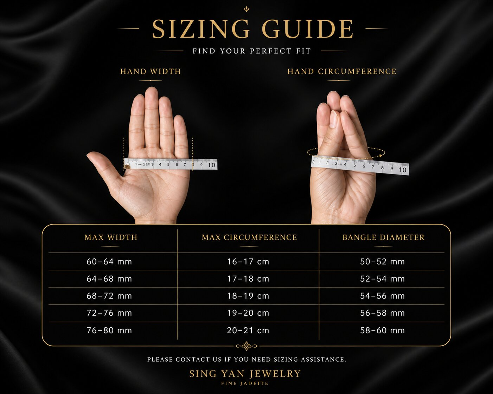

A considered guide to fit, proportion and quiet presence.
To measure your hand for a jade bangle, gently fold your thumb towards your palm and measure the widest part of your hand. This determines the inner diameter required for the bangle to pass through comfortably.
Unlike a bracelet, a jade bangle must pass over the hand before resting on the wrist. This is why hand width and circumference are more important than wrist size.
The chart below provides a clear reference for hand width, hand circumference and corresponding bangle diameter.

This guide offers a helpful starting point. Final fit depends on hand structure, knuckle height and personal comfort.
A jade bangle is not chosen by colour alone. Structure, translucency and balance reveal its true character over time.
At Ixchell Jewellery Singapore, each piece is viewed under different light, allowing its natural qualities to be understood before any decision is made.
Ixchell Jewellery is a private jadeite boutique located near City Hall MRT. Visitors often discover us while exploring National Gallery Singapore and the surrounding area.
We invite you to experience jadeite in person, where its presence becomes clear.